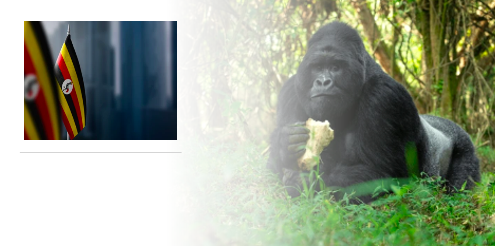

About Me
My name is Elisha Mugenyi, I am a student of BS Software Development from BYU-Idaho. I was born and raised from Uganda, i love programming and i want my career to be in Software Development.

Kampala, Uganda
Uganda was named The Pearl of Africa by then UK Prime Minister, Churchill Winston. Uganda has a cool weather all year round and it is home to the world's rarest Gorillas, The Silverbacks. Uganda is located in the East of Africa.
